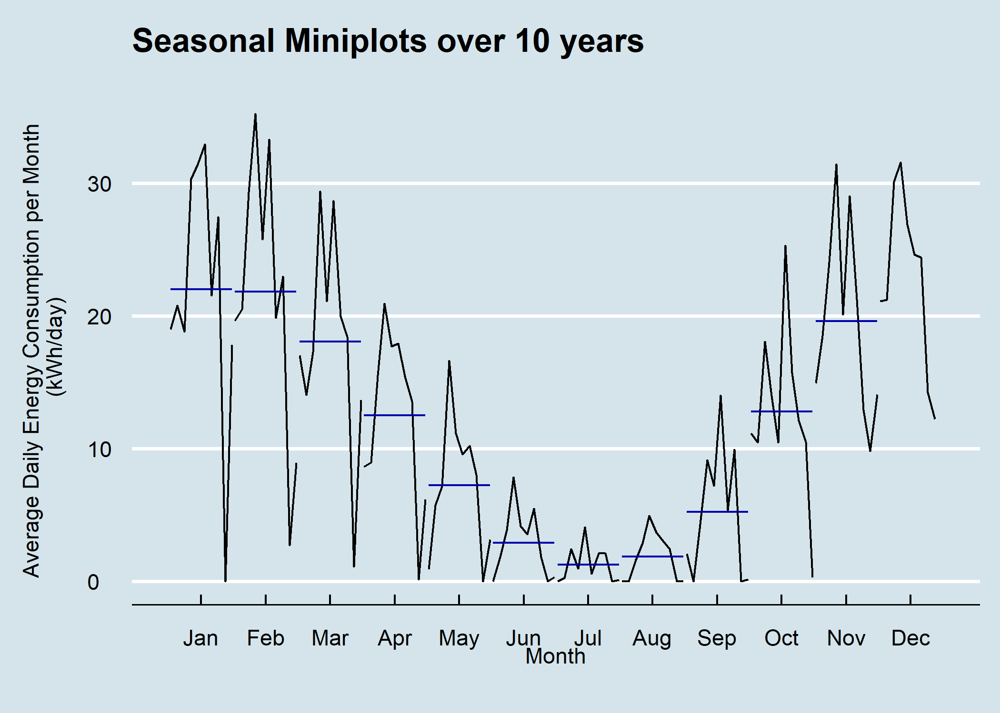

8.2 Mini Plots
8.2.1 Goal
Plot a seasonal month plot as described in Hyndman and Athanasopoulos (2014, chapter 2.5):

Figure 8.4: Seasonal Plot with mini Time Plots over 10 Years
Here the seasonal patterns for each season are collected together in seprate mini time plots.
8.2.2 Data Basis

Figure 8.5: Raw Data for Seasonal Miniplots
8.2.3 Solution
Create a new script, copy/paste the following code and run it:
library(forecast)
library(dplyr)
library(plotly)
library(htmlwidgets)
library(ggthemes)
library(viridis)
library(lubridate)
# load csv file
df <- read.csv2("https://github.com/hslu-ige-laes/edar/raw/master/sampleData/flatHeatAndHotWater.csv",
stringsAsFactors=FALSE)
# filter flat
df <- df %>% select(timestamp, Adr02_energyHeat)
colnames(df) <- c("timestamp", "meterValue")
# calculate consumption value per month
# pay attention, the value of 2010-02-01 00:00:00 represents the meter reading on february first,
# so the consumption for february first is value(march) - value(february)!
df <- df %>% dplyr::mutate(value = lead(meterValue) - meterValue)
# remove counter value column
df <- df %>% select(-meterValue)
# value correction (outlier because of commissioning)
df[1,2] <- 600
# create time series object for ggmonthplot function
df.ts <- ts(df[-1], frequency = 12, start = min(year(df$timestamp)))
# create x/y plot
numYears = length(unique(year(df$timestamp)))
plot <- ggmonthplot(df.ts,
col = viridis(numYears),
main = "Seasonal Miniplots over 10 years\n",
ylab = "Energy Consumption (kWh/month)\n",
xlab = "Month\n "
)
# change theme (optional)
plot <- plot + ggthemes::theme_economist()
# make plot interactive (optional)
plotly <- plotly::ggplotly(plot)
# show plot
plotly8.2.4 Discussion
This type of seasonal plot shows the mean value of each month and therefore emphasises on the monthly comparison
It revelas as well the mean seasonal pattern with the blue lines